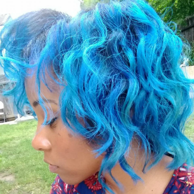

You Ain't Never Had A Friend Like Me!
Certified Disney Nerd
"Be Our Guest, "A Whole New World”, “Two Worlds”, “Hakuna Matata”, “Part Of Your World”, ”Be Prepared”, “I’ll Make A Man Out Of You” are only a sample of the Disney songs I have on my work playlist. If something scary or unpleasant happens to me- like flipping through channels and accidently stumbling upon a scary movie at the climax (with the creepy music or sharp noises that make you jump) I turn to my Bible or a Disney movie. I'm that girl.
In case you're wondering, my top 3 Disney Movies of all time are! (Drum roll please...)
Lion King
Beauty and the Beast
Hercules